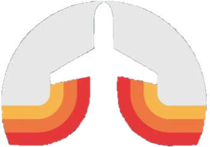

4. /
Nächste Hider (übrig bei letzter Auslosung): Henri
Einstellungen:
Versteckzeit: 30 Minuten
Radius: 300m
Infos:
Für Alle:
- Am Anfang Reihenfolge auslosen
- Nur festgelegte Busse auf festgelegten Routen zum Bewegen erlaubt (und Laufen): https://www.google.com/maps/d/u/0/viewer?mid=1_ZA4u8qJZtbdQ6x4LXxdXUBofW_Pz3E&ll=52.2716706243354%2C8.146952928916344&z=13
- Standort über Google Maps senden
- Für gleiche Infos (bei manchen Karten/Fragen wichtig) ist nur Google Maps erlaubt!
- Infos zu Fragenkategorien unten
Sucher:
- Eine Frage auf einmal
- Beim erneuten Stellen einer Frage verdoppeln sich die Belohnungen des Versteckers (…, verdreifacht, vervierfacht,…)
- Street View verboten!
Verstecker:
- Nach Ablauf der Versteckzeit sofort aussteigen/in Radius der Haltestelle bleiben
- 5 Minuten Zeit zum Antworten (10 Minuten bei Fotos)
- Karten ziehen nach beantworten
- Maximale Handgröße: 6
- Bei neuen Karten während vollem Deck: Alte Karten/Neue Karte-/n spielen oder zurück auf den Stapel
- Wenn Sucher in Radius: Nicht mehr Bewegen! (Bis sie den Radius wieder verlassen haben) => Bei nicht beantwortbaren Foto-Fragen als Antwort "Ich kann diese Frage nicht beantworten" => Weiterhin Karten als Belohnung ziehen
- Versteck muss immer öffentlich zugänglich sein und darf maximal 10 Meter von einer auf Google Maps markierten Straße/Weg entfernt sein
Fragenkategorien:
- Matching:
Frage: "Ist dein nähestes … dasselbe … wie bei uns?"
Antwort: Ja/Nein
Kosten: Zieh 3 und behalte 1
Fragen: Zugstrecke (Auf Google: "ICE Strecken" + "Weitere DB Strecken"; Es Zählen: West-Ost/Atter-Lüstringen; Nord-Süd/Belm-Hasbergen/Sutthausen); Haltestellennamenlänge; Straße/Weg; Bezirk; Stadtteil; Berg; Park; Freizeitpark (Es sind 2 auf der Karte); Golf (Es gibt 3); Museum; Kino; Krankenhaus; Bücherei
- Measuring:
Frage: "Im Vergleich zu uns, bist du näher oder weiter weg von …?"
Antwort: Näher, Weiter
Kosten: Zieh 3 und behalte 1
Fragen: Flughafen (Es gibt 1); Hochgeschwindigkeitszugstrecke (nur die ICE Strecken); Bahnhof; Internationale Grenze (Niederlande); Bundeslandgrenze (NRW); Landkreisgrenze (Landkreis OS/Landkreis Steinfurt); Meeresspiegel; "Stück" Wasser (Auf Karte als Wasser markiert); Küste (Nordsee); Berg; Park; Freizeitpark; Zoo (Zoo Osnabrück); Aquarium (Zoo Osnabrück); Golf (Es gibt 3); Museum; Kino; Krankenhaus; Bücherei; Konsulat (Münster)
- Radar:
Frage: "Bist du innerhalb von … von uns?"
Antwort: Ja/Nein
Kosten: Zieh 2 und behalte 1
Fragen: 500m; 1km; 2km; 5km; 10km; 15km
- Thermometer:
Frage: Nachdem wir uns … bewegt haben, sind wir wärmer oder kälter?"
Antwort: Wärmer, Kälter
Kosten: Zieh 2 und behalte 1
Fragen: 1km, 5km
- Foto Fragen:
Frage: "Sende uns ein Foto von …"
Antwort: Foto/"Ich kann diese Frage nicht beantworten" (Falls Sucher in Radius sind und Foto von dort nicht möglich ist)
Kosten: Zieh eine Karte und behalte diese
Fragen: Höchstes sichtbares Gebäude von Haltestelle (Dach und 2 Seiten, Struktur mind. 2/3 des Bildes); Breiteste Straße (Beide Seiten der Straße); Baum (ganzer Baum); Größtes Gebäude nach aktueller Sicht (Dach und 2 Seiten, Struktur mind. 2/3 des Bildes); Selfie (selbsterklärend); Himmel
- Tentakel:
Frage: "Innerhalb von 2km Metern von uns, welche/-s ... ist das näheste von dir aus? (Verstecker muss 2km entfernt sein, sonst nicht antworten oder schreiben, dass es nicht geht)"
Antwort: Name von Ort
Kosten: Zieh 4 und behalte 2
Fragen: Museen; Büchereien; Kinos; Krankenhäuser